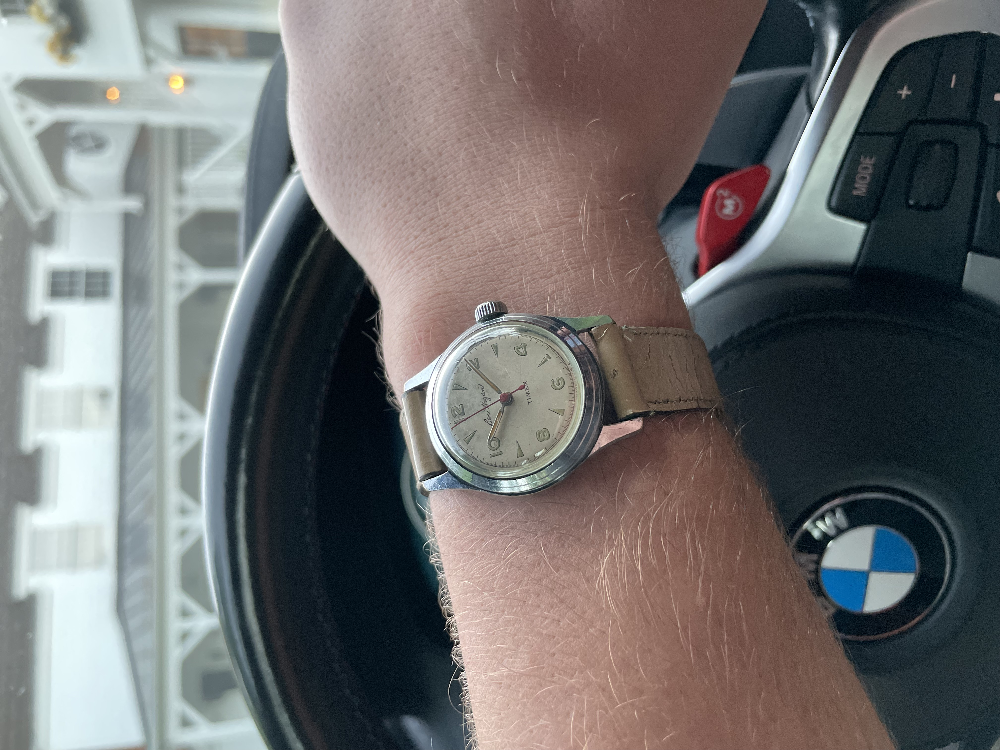

Watch Collecting
A hobby page about automatic, quartz, and mechanical watches.
Why I Love Watch Collecting
My interest in watches started with a single everyday piece (Seiko spb119), then grew into a full-blown fascination with automatic and mechanical movements. Each watch is a tiny machine on the wrist that tracks time, history, and design all at once. I especially enjoy pieces with a clean dial and a slightly quirky detail, like an unusual bezel or hand shape that makes the watch feel unique. And yes, I still check the time on my phone, but the watch makes it more fun.
Top 3 Watches on My Wishlist
- Vacheron Constantin 222
- Breitling Navitimer
- Seiko spb143
Strap Materials I Like
- Stainless steel bracelets
- Textured leather straps
- Durable rubber for swimming
Watch Collecting Roadmap
An ordered list of collecting stages with nested unordered lists:
- Starter Collection
- One reliable everyday watch
- A digital or smart watch for workouts
- Learning basic care and storage
- Enthusiast Phase
- Exploring mechanical movements
- Trying different case sizes and dial layouts
- Following watch forums and reviewers
- Collector Phase
- Focusing on specific brands or eras
- Tracking values, provenance, and service history
- Sharing the hobby with friends and family
The Story of the Omega Watch — by Gary Walburger
The story begins when I was serving a mission in Australia in 1962. I was serving with a companion, Steve Malan, in Brisbane, Queensland. I noticed that he wore a very expensive watch – a Rolex Seamaster. We served well together and still keep in touch. I knew I would be traveling at the end of my mission through Asia, the Middle East, and Europe. An early stop was Hong Kong. While I was there, I decided to purchase a fine watch — an Omega Constellation in gold. It cost $200. It was really nice, and I was very proud to have it.
Along the way, we made 24 stops. It turns out that the cost of an airplane ticket for our extended trip was the same $600 as if I flew directly from Sydney to Los Angeles. My parents agreed to send American Express travelers’ cheques to several locations, and Hong Kong was the first pickup stop. As a result, I was able to buy the watch. We enjoyed many exotic stops including Thailand, India, Egypt, Jerusalem, and several cities across Europe. We found cheap hotels or hostels to sleep in at night.
When we arrived in London, I was down to five dollars but was scheduled to have money waiting at the Mission Home. There was a letter waiting for me. However, it read, “Since you could afford to buy a very expensive watch you must not need money from us.” NO MONEY and only five dollars in my pocket.
Because London was a major crossroads, many travelers falsely claimed to be missionaries. Elder Olsen, the Mission Secretary, questioned me about missionary discussions to assure himself that I really was a missionary. He then spoke with the Mission President. When he returned, he said it was against mission policy to loan money to “missionaries.”
He noticed my watch and asked if I would sell it to get home. I responded, “Can’t do that; this watch is special.” He then said, “The Mission President (Marion D. Hanks) is going to give you $50 from his own account to help you get home.” I repaid him as soon as I arrived home. I still have the watch 60 years later. It is still very special to me.